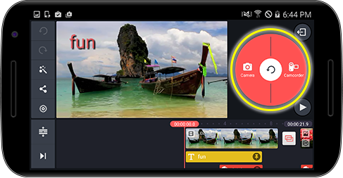

新しい映像を撮る
新しいビデオクリップを作成するための動画を録画するためには、
をタップしてください。写真を撮影するには[
、 ビデオを撮影するためには
を選択してください 。

 をタップしてください。写真を撮影するには[
をタップしてください。写真を撮影するには[  、 ビデオを撮影するためには
、 ビデオを撮影するためには を選択してください 。をタップしてください。写真を撮影するには[ 、 ビデオを撮影するためにはを選択してください 。
を選択してください 。をタップしてください。写真を撮影するには[ 、 ビデオを撮影するためにはを選択してください 。